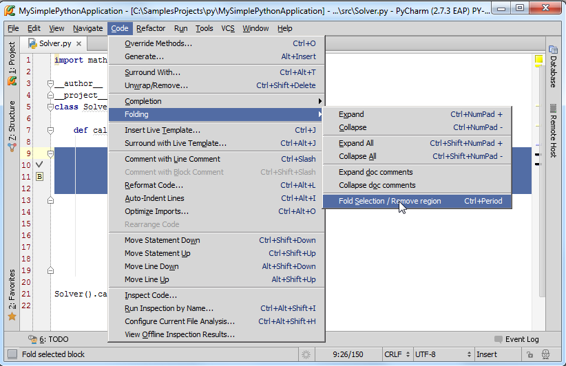

1、主题
在一些情况下，如果某些代码显得不太重要，我们可以通过Pycharm的代码折叠功能将其折叠为一行。在接下来的部分我们将介绍代码折叠功能基本用法。
2、代码可折叠轮廓线以及折叠开关
首先，我们观察一下代码左侧的折叠线。这条细线显示在代码左侧，标记了代码块区域。当代码处于未折叠状态时，线的开头和结尾分别显示折叠开关和；当代码块折叠之后，两个开关标志将会合并成一个，折叠后的代码只显示第一行，其他行隐藏在三个点号后面。单击这个加号的标志即可将折叠代码展开。
将鼠标指针悬停在折叠线上，折叠线会加粗显示：
注意在这里我们可以取消折叠先的显示。单开设置对话框，在Editor节点下，单击Code Folding页面，取消Show code folding outline复选框的勾选。当折叠线不可见时，我们只能通过菜单命令（Code | Folding | Expand/Collapse）或者快捷键来实现代码的折叠。
3、浏览折叠后隐藏的代码
加入你希望能够在不展开代码块的情况下查看折叠代码的内容，操作非常简单，只需将鼠标指针悬停在三个点号上，Pycharm就会弹出一个临时窗口来显示折叠的代码内容：
Pycharm也会默认将超出当前编辑区域的代码块显示完整。如下图所示：文件开头的代码部分在当前编辑环境下不可见（超出当前编辑框的显示范围）， 不过我们不必拖动滚动条来浏览那部分未显示的内容，只需将鼠标悬停在代码块结束标记，Pycharm会自动弹出窗口来补全显示当前的代码块：
4、默认代码块的折叠规则
默认情况下折叠先会标记类和函数的实现部分，折叠也是针对这部分代码块进行的，即默认折叠一个类、一个函数。
5、折叠任意代码片
假设，你希望折叠几句零散的程序，而这些语句并不属于默认可折叠的代码块（不是一个完整的类或函数），如何做到？
首先选中你希望折叠的代码片
然后进行以下操作（三选一即可）：
在主菜单选择Code | Folding | Fold Selection/Remove Region菜单命令。
右击选中的代码片，在快捷菜单中选择Folding | Fold Selection/Remove Region
按下Ctrl+Period快捷键

此时选中的代码片被折叠隐藏。
需要注意的就是所选代码片应该位于类体或者函数体内，如果我们选择了类或函数开头的定义部分，是无法对这部分代码进行折叠隐藏的。
6、使用双行注释来注释代码
Pycharm提供了两种逻辑代码块环绕注释方式surround：
VisualStudio模式：
NetBeans模式：
具体操作如下：
（1）选中待环绕注释的代码块
（2）以下操作二选一
使用Code | Surround with主菜单命令
按下Ctrl+Alt+T
（3）在弹出的快捷菜单中选择需要的注释风格：
（4）输入一些必要的注释描述
当通过这种方法对代码片进行环绕注释之后，折叠开关会显示在注释行左侧：
单击折叠开关可折叠对应代码片，只显示添加的环绕注释信息：
更多有关代码折叠功能的信息参见here。